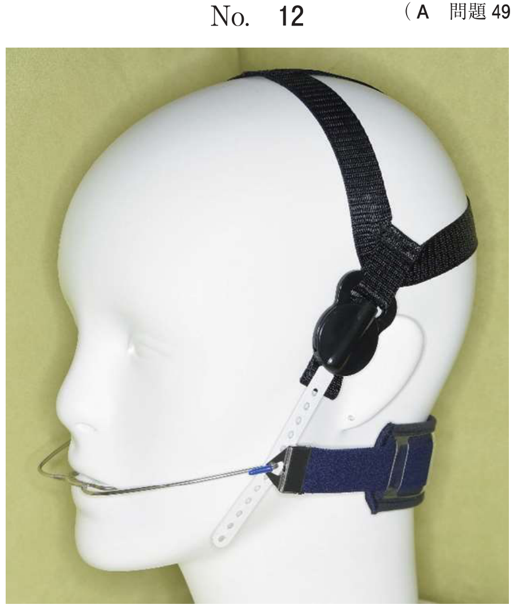
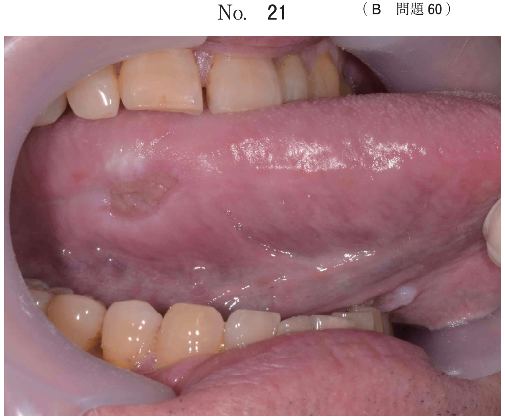

Posseltの図形（Posselt figure）は、切歯点の矢状面内における限界運動路を示した図形である。Swedish bananaとも呼ばれる。
| 位置 | 下顎位 | 特徴 |
|---|---|---|
| 最上点 | 咬頭嵌合位 | 上下顎歯が最も嵌合した位置 |
| 最後上点 | 下顎最後退位 | 下顎が最も後方にある位置 |
| 最下点 | 最大開口位 | 最大開口時の切歯点位置 |
| 前方限界 | 前方限界運動路 | 切端咬合を経て前方へ |
| 後方限界 | 後方限界運動路 | 蝶番運動の軌跡 |
下顎運動は回転（rotation）と移動（translation）の2要素から成る。
両側顆頭点と切歯点を結んだ三角形。一辺約10cmの正三角形に近似する。平均値咬合器の設計基準となる。
Bonwill三角と咬合平面のなす角度。平均値は20〜25°。
| 名称 | 定義 | 平均値 |
|---|---|---|
| 矢状顆路傾斜角 | 矢状面における顆路と基準平面のなす角 | 約30〜40° |
| 矢状切歯路傾斜角 | 前方運動時の切歯の経路と基準平面のなす角 | 個人差大 |
| Bennett角 | 側方運動時の非作業側顆頭の移動方向と矢状面のなす角 | 約15° |
| Fischer角 | 咬合平面に対する側方顆路傾斜角 | ― |
| Balkwill角 | Bonwill三角と咬合平面のなす角 | 20〜25° |
半調節性咬合器の顆路調節に使用。前方および側方のチェックバイトを採得し、咬合器の顆路を調節する。咬頭嵌合位から約5mm離れた下顎位で記録するのが望ましい。
全調節性咬合器の顆路調節に使用。口腔内に装着したクラッチと描記板により、下顎運動を三次元的に記録する。
顎関節の模式図（A）とPosseltの図形（B）を示す。
Aの状態に対応するのはBのどれか。1つ選べ。

【解説】顎関節の模式図で下顎頭が関節窩の最後方に位置している状態は、Posseltの図形では下顎最後退位に相当する。図形の後上方の位置（オ）が対応する。
Bonwill三角と関連するのはどれか。1つ選べ。
【解説】Balkwill角はBonwill三角と咬合平面のなす角度である。Bonwill三角を基準として定義されるため、両者は直接関連する。切歯路角・Fischer角・Bennett角・矢状顆路傾斜角はいずれも顎運動に関連するが、Bonwill三角とは直接関連しない。
前歯部ブリッジの形態不良を主訴に来院した50歳の女性の、初診時の口元の写真（別冊No.29A）、診察中に治療の参考となる補助線を記入した写真（別冊No.29B）及び治療後の口腔内写真（別冊No.29C）を別に示す。
治療の参考としたのはどれか。2つ選べ。

【解説】前歯部補綴における審美的基準として、瞳孔線（切縁の傾きの参考）と顔面正中（正中の位置決め）が重要である。Spee彎曲は臼歯部の咬合彎曲、Balkwill角・Bonwill三角は咬合器装着の基準であり、前歯部ブリッジの審美的形態とは直接関連しない。